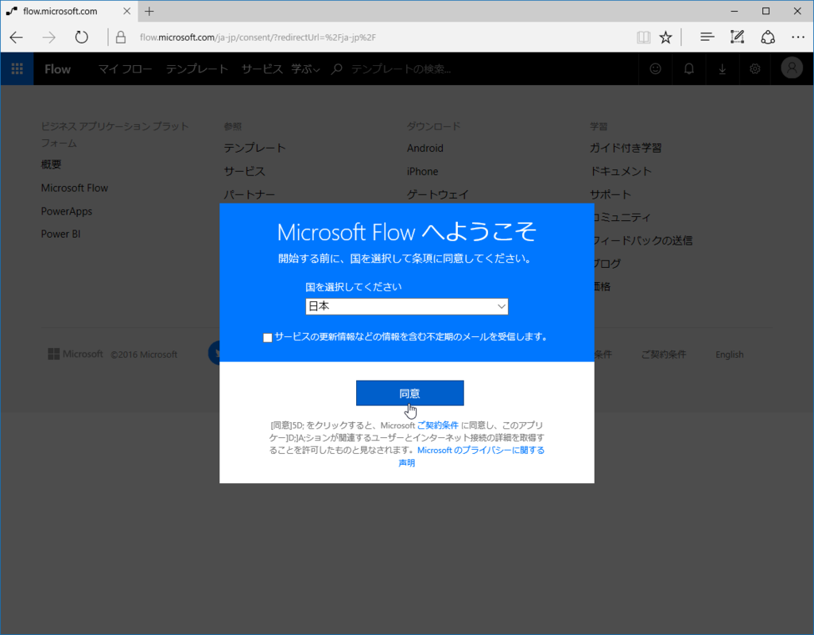
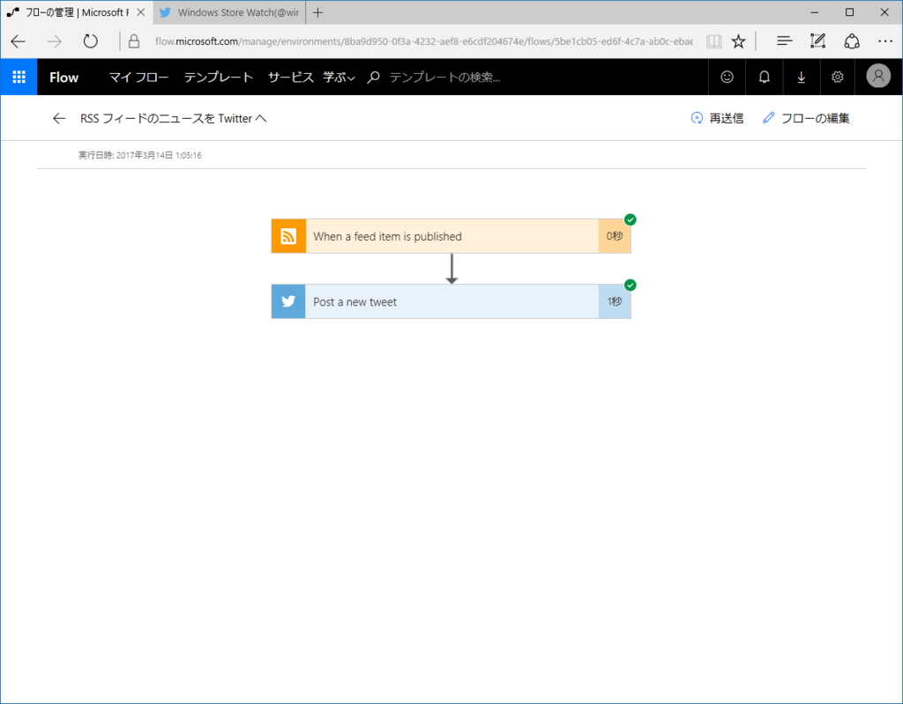

Microsoft Flow でブログの更新を Twitter で配信してみる
公開日：
これの更新を――
で配信したいと思いました。方法はいろいろあるだろうけど（IFTTT が有名でしょうか）、今回は Microsoft Flow を試してみようと思います。確かいろいろ制限はあるけど、基本はタダです。
- 月ごとの実行数 750 回
- 無制限のフロー作成
- 15 分ごとにチェック
準備するもの
- Microsoft アカウント
- Twitter アカウント
- ブログのフィード URL（はてなブログなら トップのアドレス/feed みたいな感じ）
フローを作成する
フローというのは特定の処理です。今回の場合、
- ブログの更新を Twitter で配信する
が目的ですが、これは2つのフローを組み合わせることで実現できます。
- ブログの更新を検知
- 検知した更新を Twitter へ投稿
Microsoft Flow にはすでにたくさんのフロー（メールを送る、プッシュ通知を送るなどなど）が用意されているので、たいていは組み合わせるだけです。
まず https://flow.microsoft.com/ へアクセスし――

Microsoft アカウントでサインインします。

あとはフローを組み立てていくだけなのですが、実はもう「フィードを Twitter へ投稿する」という作業のテンプレートがありますので、それを使っちゃいます。

テンプレートを選択すると――

編集画面が現れるので、Twitter 連携とフィード URL の入力をし、画面右上の［フローの作成］ボタンを押せば完成です。簡単すぎて思わず鼻毛伸びそう。
「ツイートの文言をカスタマイズしたいなー」という場合は、編集することもできます。エディター機能がまだあんまりイケてないのでサックリ消して、「［フィードのタイトル］［プライマリフィードリンク］」を配置してみました。これで
【新規追加】Shazam（もう終了しちゃってたけど！）https://t.co/RycKq50w3r
— Windows Store Watch (@win_store_watch) 2017年3月13日
みたいなツイートになるはずです。ハッシュタグなんかを追加してみてもいいかもしれませんね。メディアの投稿は今回のケースではちょっと難しいかもですが、「画像を添付したメールを Gmail に送信したらそれを Twitter へ投稿」なんていうフローを作るときに役立つかも。
お疲れさまでした！

管理画面からはフローの実行結果なんかもチェックできますよ～
追伸
プレビュー版の Gmail 送信機能を使ってみた（ツイートを投稿したらメールで通知、みたいな）んだけど、メールが送られてこない……まぁ、プレビューだし仕方ない。
追伸その２
あとで確認したら、ちゃんと Gmail に送られていた。えらいえらい。

一気に記事を更新すると、一度に配信が始まるようだ。連投は嫌だから、ディレイをもうけたいなぁ……いい方法がないか後で探してみる。
Flow で Twitter を投稿したんだけど、タイトルが半角で終わると URL に引っ付いちゃう。間に挟んでたのを 半角スペース → 全角スペース にして回避 pic.twitter.com/bdJdiM5DM5
— だるやなぎドロップアウト (@daruyanagi) 2017年3月14日